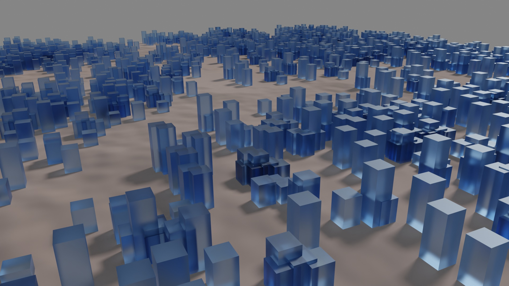

aki-labo digital design
Profile
Sample Room
VR
Others
AKIRA's PLATZ
Others - Computational Design
Blender - Geometry Nodes
Alien Orb
this Demo is based on
this tutorial
.
砂上の楼閣 | Buildings built on sand
